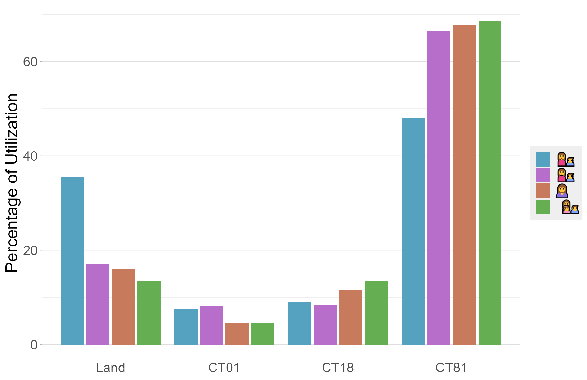

layout: true .toc.banner[ .shorttitle[ ] ] --- name: home class: metadata customtitle middle left giphy .toc.sidebar.left-column[ .outline[ # [Обоснование ](#He7932) # [Инструменты ](#H44259) # [Дальнейшие шаги ](#H210ce) ] ] .toc.mainbar.right-column.scrollable[ .authors[ .author[Никита Платонов] ] .title[ Спутниковая биотелеметрия ] .subtitle[ Веб-сервисы для просмотра и анализа перемещения белых медведей ] .what[ ] .where[ ] .when[ .updated[Обновлено: 2025-12-09 19:49] ] ] --- name: He7932 .toc.sidebar.left-column[ .outline[ # [Обоснование ](#He7932).fg[].bg[] # [Инструменты ](#H44259).bg[] # [Дальнейшие шаги ](#H210ce).bg[] ] ] .toc.mainbar.right-column.scrollable[ .header.h1.broad[ <span class="generation">Обоснование</span> ] .fixprecode[ .pulling[ .pull-left-60[ + Для интересующихся + Текущее местоположение и состояние местообитаний + Для науки + .inset.gebco[Характеристики траектории] + Участки обитания + .inset.icydays[Ресурсы среды] + Жизнедеятельность + Родовые берлоги + .inset.maxent[Моделирование ареала] ] .pull-right-40[ .untouchable[ <img src="assets/daily-between-gebco.png" width="1330" height="700" style="display: block; margin: auto auto auto 0;" />  <img src="assets/icydays-natice-CT81.png" width="1330" height="700" style="display: block; margin: auto auto auto 0;" /> <img src="assets/forecast-maxent.png" width="1330" height="700" style="display: block; margin: auto auto auto 0;" /> ] ] ] ] ] --- name: H44259 .toc.sidebar.left-column[ .outline[ # [Обоснование ](#He7932) # [Инструменты ](#H44259).fg[] ## [Просмотр [<svg aria-hidden="true" role="img" viewBox="0 0 512 512" style="height:1em;width:1em;vertical-align:-0.125em;margin-left:auto;margin-right:auto;font-size:inherit;fill:currentColor;overflow:visible;position:relative;"><title>open this URL</title><path d="M320 0c-17.7 0-32 14.3-32 32s14.3 32 32 32h82.7L201.4 265.4c-12.5 12.5-12.5 32.8 0 45.3s32.8 12.5 45.3 0L448 109.3V192c0 17.7 14.3 32 32 32s32-14.3 32-32V32c0-17.7-14.3-32-32-32H320zM80 32C35.8 32 0 67.8 0 112V432c0 44.2 35.8 80 80 80H400c44.2 0 80-35.8 80-80V320c0-17.7-14.3-32-32-32s-32 14.3-32 32V432c0 8.8-7.2 16-16 16H80c-8.8 0-16-7.2-16-16V112c0-8.8 7.2-16 16-16H192c17.7 0 32-14.3 32-32s-14.3-32-32-32H80z"/></svg>](https://wwfrussia.shinyapps.io/argos?branch=dikson) ](#H44259) <span class="bullet bullet-active">[•](#H44259)</span><span class="bullet mslide7m">[•](#H427c6)</span><span class="bullet mslide8m">[•](#Hd2c37)</span>.fg[].bg[] ## [Анализ [<svg aria-hidden="true" role="img" viewBox="0 0 512 512" style="height:1em;width:1em;vertical-align:-0.125em;margin-left:auto;margin-right:auto;font-size:inherit;fill:currentColor;overflow:visible;position:relative;"><title>open this URL</title><path d="M320 0c-17.7 0-32 14.3-32 32s14.3 32 32 32h82.7L201.4 265.4c-12.5 12.5-12.5 32.8 0 45.3s32.8 12.5 45.3 0L448 109.3V192c0 17.7 14.3 32 32 32s32-14.3 32-32V32c0-17.7-14.3-32-32-32H320zM80 32C35.8 32 0 67.8 0 112V432c0 44.2 35.8 80 80 80H400c44.2 0 80-35.8 80-80V320c0-17.7-14.3-32-32-32s-32 14.3-32 32V432c0 8.8-7.2 16-16 16H80c-8.8 0-16-7.2-16-16V112c0-8.8 7.2-16 16-16H192c17.7 0 32-14.3 32-32s-14.3-32-32-32H80z"/></svg>](https://wwfrussia.shinyapps.io/tracking?foo=bar)](#Hfec8e).bg[] # [Дальнейшие шаги ](#H210ce) ] ] .toc.mainbar.right-column.scrollable[ .header.h2.broad[ <span class="generation">Просмотр [<svg aria-hidden="true" role="img" viewBox="0 0 512 512" style="height:1em;width:1em;vertical-align:-0.125em;margin-left:auto;margin-right:auto;font-size:inherit;fill:currentColor;overflow:visible;position:relative;"><title>open this URL</title><path d="M320 0c-17.7 0-32 14.3-32 32s14.3 32 32 32h82.7L201.4 265.4c-12.5 12.5-12.5 32.8 0 45.3s32.8 12.5 45.3 0L448 109.3V192c0 17.7 14.3 32 32 32s32-14.3 32-32V32c0-17.7-14.3-32-32-32H320zM80 32C35.8 32 0 67.8 0 112V432c0 44.2 35.8 80 80 80H400c44.2 0 80-35.8 80-80V320c0-17.7-14.3-32-32-32s-32 14.3-32 32V432c0 8.8-7.2 16-16 16H80c-8.8 0-16-7.2-16-16V112c0-8.8 7.2-16 16-16H192c17.7 0 32-14.3 32-32s-14.3-32-32-32H80z"/></svg>](https://wwfrussia.shinyapps.io/argos?branch=dikson)</span> .parent[.grand[Инструменты]] ] .fixprecode[ Разрабатывался под дизайн веб-страницы [Программы изучения белого медведя в Российской Арктике <svg aria-hidden="true" role="img" viewBox="0 0 512 512" style="height:1em;width:1em;vertical-align:-0.125em;margin-left:auto;margin-right:auto;font-size:inherit;fill:currentColor;overflow:visible;position:relative;"><title>open this URL</title><path d="M320 0c-17.7 0-32 14.3-32 32s14.3 32 32 32h82.7L201.4 265.4c-12.5 12.5-12.5 32.8 0 45.3s32.8 12.5 45.3 0L448 109.3V192c0 17.7 14.3 32 32 32s32-14.3 32-32V32c0-17.7-14.3-32-32-32H320zM80 32C35.8 32 0 67.8 0 112V432c0 44.2 35.8 80 80 80H400c44.2 0 80-35.8 80-80V320c0-17.7-14.3-32-32-32s-32 14.3-32 32V432c0 8.8-7.2 16-16 16H80c-8.8 0-16-7.2-16-16V112c0-8.8 7.2-16 16-16H192c17.7 0 32-14.3 32-32s-14.3-32-32-32H80z"/></svg>](https://bear.sevin-expedition.ru/argos/) Постоянно действующей экспедиции РАН. <iframe src="https://bear.sevin-expedition.ru/foto?showcase=0" width="1330" height="400px" data-external="1" program></iframe> ] ] --- class: preview name: H427c6 .toc.sidebar.left-column[ .outline[ # [Обоснование ](#He7932) # [Инструменты ](#H44259).fg[] ## [Просмотр [<svg aria-hidden="true" role="img" viewBox="0 0 512 512" style="height:1em;width:1em;vertical-align:-0.125em;margin-left:auto;margin-right:auto;font-size:inherit;fill:currentColor;overflow:visible;position:relative;"><title>open this URL</title><path d="M320 0c-17.7 0-32 14.3-32 32s14.3 32 32 32h82.7L201.4 265.4c-12.5 12.5-12.5 32.8 0 45.3s32.8 12.5 45.3 0L448 109.3V192c0 17.7 14.3 32 32 32s32-14.3 32-32V32c0-17.7-14.3-32-32-32H320zM80 32C35.8 32 0 67.8 0 112V432c0 44.2 35.8 80 80 80H400c44.2 0 80-35.8 80-80V320c0-17.7-14.3-32-32-32s-32 14.3-32 32V432c0 8.8-7.2 16-16 16H80c-8.8 0-16-7.2-16-16V112c0-8.8 7.2-16 16-16H192c17.7 0 32-14.3 32-32s-14.3-32-32-32H80z"/></svg>](https://wwfrussia.shinyapps.io/argos?branch=dikson) ](#H44259) <span class="bullet bullet">[•](#H44259)</span><span class="bullet bullet-active">[•](#H427c6)</span><span class="bullet mslide8m">[•](#Hd2c37)</span>.fg[].bg[] ## [Анализ [<svg aria-hidden="true" role="img" viewBox="0 0 512 512" style="height:1em;width:1em;vertical-align:-0.125em;margin-left:auto;margin-right:auto;font-size:inherit;fill:currentColor;overflow:visible;position:relative;"><title>open this URL</title><path d="M320 0c-17.7 0-32 14.3-32 32s14.3 32 32 32h82.7L201.4 265.4c-12.5 12.5-12.5 32.8 0 45.3s32.8 12.5 45.3 0L448 109.3V192c0 17.7 14.3 32 32 32s32-14.3 32-32V32c0-17.7-14.3-32-32-32H320zM80 32C35.8 32 0 67.8 0 112V432c0 44.2 35.8 80 80 80H400c44.2 0 80-35.8 80-80V320c0-17.7-14.3-32-32-32s-32 14.3-32 32V432c0 8.8-7.2 16-16 16H80c-8.8 0-16-7.2-16-16V112c0-8.8 7.2-16 16-16H192c17.7 0 32-14.3 32-32s-14.3-32-32-32H80z"/></svg>](https://wwfrussia.shinyapps.io/tracking?foo=bar)](#Hfec8e).bg[] # [Дальнейшие шаги ](#H210ce) ] ] .toc.mainbar.right-column.scrollable[ .header.h2.broad[ <span class="generation">Просмотр [<svg aria-hidden="true" role="img" viewBox="0 0 512 512" style="height:1em;width:1em;vertical-align:-0.125em;margin-left:auto;margin-right:auto;font-size:inherit;fill:currentColor;overflow:visible;position:relative;"><title>open this URL</title><path d="M320 0c-17.7 0-32 14.3-32 32s14.3 32 32 32h82.7L201.4 265.4c-12.5 12.5-12.5 32.8 0 45.3s32.8 12.5 45.3 0L448 109.3V192c0 17.7 14.3 32 32 32s32-14.3 32-32V32c0-17.7-14.3-32-32-32H320zM80 32C35.8 32 0 67.8 0 112V432c0 44.2 35.8 80 80 80H400c44.2 0 80-35.8 80-80V320c0-17.7-14.3-32-32-32s-32 14.3-32 32V432c0 8.8-7.2 16-16 16H80c-8.8 0-16-7.2-16-16V112c0-8.8 7.2-16 16-16H192c17.7 0 32-14.3 32-32s-14.3-32-32-32H80z"/></svg>](https://wwfrussia.shinyapps.io/argos?branch=dikson)</span> .parent[.grand[Инструменты]] ] .fixprecode[ .pulling[ .pull-left-50[ + Ежесуточное обновление данных биотелеметрии и их обработка в ИПЭЭ РАН. + Одно приложение для независимых проектов + Включение дополнительных данных через веб-сервисы TMS (картографическая подложка), WMS (концентрация льда AMSR2) *и др.* + Упрощение координат и сокращение узлов траектории для конфиденциальности данных. ] .pull-right-50[ <iframe src="https://wwfrussia.shinyapps.io/argos?branch=dikson" width="1330" height="960" data-external="1" argos-preview></iframe> ] ] ] ] --- name: Hd2c37 .toc.sidebar.left-column[ .outline[ # [Обоснование ](#He7932) # [Инструменты ](#H44259).fg[] ## [Просмотр [<svg aria-hidden="true" role="img" viewBox="0 0 512 512" style="height:1em;width:1em;vertical-align:-0.125em;margin-left:auto;margin-right:auto;font-size:inherit;fill:currentColor;overflow:visible;position:relative;"><title>open this URL</title><path d="M320 0c-17.7 0-32 14.3-32 32s14.3 32 32 32h82.7L201.4 265.4c-12.5 12.5-12.5 32.8 0 45.3s32.8 12.5 45.3 0L448 109.3V192c0 17.7 14.3 32 32 32s32-14.3 32-32V32c0-17.7-14.3-32-32-32H320zM80 32C35.8 32 0 67.8 0 112V432c0 44.2 35.8 80 80 80H400c44.2 0 80-35.8 80-80V320c0-17.7-14.3-32-32-32s-32 14.3-32 32V432c0 8.8-7.2 16-16 16H80c-8.8 0-16-7.2-16-16V112c0-8.8 7.2-16 16-16H192c17.7 0 32-14.3 32-32s-14.3-32-32-32H80z"/></svg>](https://wwfrussia.shinyapps.io/argos?branch=dikson) ](#H44259) <span class="bullet bullet">[•](#H44259)</span><span class="bullet bullet">[•](#H427c6)</span><span class="bullet bullet-active">[•](#Hd2c37)</span>.fg[].bg[] ## [Анализ [<svg aria-hidden="true" role="img" viewBox="0 0 512 512" style="height:1em;width:1em;vertical-align:-0.125em;margin-left:auto;margin-right:auto;font-size:inherit;fill:currentColor;overflow:visible;position:relative;"><title>open this URL</title><path d="M320 0c-17.7 0-32 14.3-32 32s14.3 32 32 32h82.7L201.4 265.4c-12.5 12.5-12.5 32.8 0 45.3s32.8 12.5 45.3 0L448 109.3V192c0 17.7 14.3 32 32 32s32-14.3 32-32V32c0-17.7-14.3-32-32-32H320zM80 32C35.8 32 0 67.8 0 112V432c0 44.2 35.8 80 80 80H400c44.2 0 80-35.8 80-80V320c0-17.7-14.3-32-32-32s-32 14.3-32 32V432c0 8.8-7.2 16-16 16H80c-8.8 0-16-7.2-16-16V112c0-8.8 7.2-16 16-16H192c17.7 0 32-14.3 32-32s-14.3-32-32-32H80z"/></svg>](https://wwfrussia.shinyapps.io/tracking?foo=bar)](#Hfec8e).bg[] # [Дальнейшие шаги ](#H210ce) ] ] .toc.mainbar.right-column.scrollable[ .header.h2.broad[ <span class="generation">Просмотр [<svg aria-hidden="true" role="img" viewBox="0 0 512 512" style="height:1em;width:1em;vertical-align:-0.125em;margin-left:auto;margin-right:auto;font-size:inherit;fill:currentColor;overflow:visible;position:relative;"><title>open this URL</title><path d="M320 0c-17.7 0-32 14.3-32 32s14.3 32 32 32h82.7L201.4 265.4c-12.5 12.5-12.5 32.8 0 45.3s32.8 12.5 45.3 0L448 109.3V192c0 17.7 14.3 32 32 32s32-14.3 32-32V32c0-17.7-14.3-32-32-32H320zM80 32C35.8 32 0 67.8 0 112V432c0 44.2 35.8 80 80 80H400c44.2 0 80-35.8 80-80V320c0-17.7-14.3-32-32-32s-32 14.3-32 32V432c0 8.8-7.2 16-16 16H80c-8.8 0-16-7.2-16-16V112c0-8.8 7.2-16 16-16H192c17.7 0 32-14.3 32-32s-14.3-32-32-32H80z"/></svg>](https://wwfrussia.shinyapps.io/argos?branch=dikson)</span> .parent[.grand[Инструменты]] ] .fixprecode[ <iframe src="https://wwfrussia.shinyapps.io/argos?branch=dikson" width="1330" height="652px" data-external="1" argos></iframe> ] ] --- class: preview name: Hfec8e .toc.sidebar.left-column[ .outline[ # [Обоснование ](#He7932) # [Инструменты ](#H44259).fg[] ## [Просмотр [<svg aria-hidden="true" role="img" viewBox="0 0 512 512" style="height:1em;width:1em;vertical-align:-0.125em;margin-left:auto;margin-right:auto;font-size:inherit;fill:currentColor;overflow:visible;position:relative;"><title>open this URL</title><path d="M320 0c-17.7 0-32 14.3-32 32s14.3 32 32 32h82.7L201.4 265.4c-12.5 12.5-12.5 32.8 0 45.3s32.8 12.5 45.3 0L448 109.3V192c0 17.7 14.3 32 32 32s32-14.3 32-32V32c0-17.7-14.3-32-32-32H320zM80 32C35.8 32 0 67.8 0 112V432c0 44.2 35.8 80 80 80H400c44.2 0 80-35.8 80-80V320c0-17.7-14.3-32-32-32s-32 14.3-32 32V432c0 8.8-7.2 16-16 16H80c-8.8 0-16-7.2-16-16V112c0-8.8 7.2-16 16-16H192c17.7 0 32-14.3 32-32s-14.3-32-32-32H80z"/></svg>](https://wwfrussia.shinyapps.io/argos?branch=dikson) ](#H44259).bg[] ## [Анализ [<svg aria-hidden="true" role="img" viewBox="0 0 512 512" style="height:1em;width:1em;vertical-align:-0.125em;margin-left:auto;margin-right:auto;font-size:inherit;fill:currentColor;overflow:visible;position:relative;"><title>open this URL</title><path d="M320 0c-17.7 0-32 14.3-32 32s14.3 32 32 32h82.7L201.4 265.4c-12.5 12.5-12.5 32.8 0 45.3s32.8 12.5 45.3 0L448 109.3V192c0 17.7 14.3 32 32 32s32-14.3 32-32V32c0-17.7-14.3-32-32-32H320zM80 32C35.8 32 0 67.8 0 112V432c0 44.2 35.8 80 80 80H400c44.2 0 80-35.8 80-80V320c0-17.7-14.3-32-32-32s-32 14.3-32 32V432c0 8.8-7.2 16-16 16H80c-8.8 0-16-7.2-16-16V112c0-8.8 7.2-16 16-16H192c17.7 0 32-14.3 32-32s-14.3-32-32-32H80z"/></svg>](https://wwfrussia.shinyapps.io/tracking?foo=bar)](#Hfec8e) <span class="bullet bullet-active">[•](#Hfec8e)</span><span class="bullet mslide10m">[•](#Hc9837)</span>.fg[].bg[] # [Дальнейшие шаги ](#H210ce) ] ] .toc.mainbar.right-column.scrollable[ .header.h2.broad[ <span class="generation">Анализ [<svg aria-hidden="true" role="img" viewBox="0 0 512 512" style="height:1em;width:1em;vertical-align:-0.125em;margin-left:auto;margin-right:auto;font-size:inherit;fill:currentColor;overflow:visible;position:relative;"><title>open this URL</title><path d="M320 0c-17.7 0-32 14.3-32 32s14.3 32 32 32h82.7L201.4 265.4c-12.5 12.5-12.5 32.8 0 45.3s32.8 12.5 45.3 0L448 109.3V192c0 17.7 14.3 32 32 32s32-14.3 32-32V32c0-17.7-14.3-32-32-32H320zM80 32C35.8 32 0 67.8 0 112V432c0 44.2 35.8 80 80 80H400c44.2 0 80-35.8 80-80V320c0-17.7-14.3-32-32-32s-32 14.3-32 32V432c0 8.8-7.2 16-16 16H80c-8.8 0-16-7.2-16-16V112c0-8.8 7.2-16 16-16H192c17.7 0 32-14.3 32-32s-14.3-32-32-32H80z"/></svg>](https://wwfrussia.shinyapps.io/tracking?foo=bar)</span> .parent[.grand[Инструменты]] ] .fixprecode[ .pulling[ .pull-left-50[ + Картографирование и построение численных оценок: + Траектории перемещения и их длина, + Участки обитания и их площадь. + Разработано как приложение к отчёту о выполнении НИР по изучению состояния популяций белого медведя в зоне ответственности ПАО «НК «Роснефть» (2020 г.) + Масштабируемое на новые наборы данных, но без автоматического обновления ] .pull-right-50[ <iframe src="https://wwfrussia.shinyapps.io/tracking?foo=bar" width="1330" height="400px" data-external="1" tracking-preview></iframe> ] ] ] ] --- name: Hc9837 .toc.sidebar.left-column[ .outline[ # [Обоснование ](#He7932) # [Инструменты ](#H44259).fg[] ## [Просмотр [<svg aria-hidden="true" role="img" viewBox="0 0 512 512" style="height:1em;width:1em;vertical-align:-0.125em;margin-left:auto;margin-right:auto;font-size:inherit;fill:currentColor;overflow:visible;position:relative;"><title>open this URL</title><path d="M320 0c-17.7 0-32 14.3-32 32s14.3 32 32 32h82.7L201.4 265.4c-12.5 12.5-12.5 32.8 0 45.3s32.8 12.5 45.3 0L448 109.3V192c0 17.7 14.3 32 32 32s32-14.3 32-32V32c0-17.7-14.3-32-32-32H320zM80 32C35.8 32 0 67.8 0 112V432c0 44.2 35.8 80 80 80H400c44.2 0 80-35.8 80-80V320c0-17.7-14.3-32-32-32s-32 14.3-32 32V432c0 8.8-7.2 16-16 16H80c-8.8 0-16-7.2-16-16V112c0-8.8 7.2-16 16-16H192c17.7 0 32-14.3 32-32s-14.3-32-32-32H80z"/></svg>](https://wwfrussia.shinyapps.io/argos?branch=dikson) ](#H44259).bg[] ## [Анализ [<svg aria-hidden="true" role="img" viewBox="0 0 512 512" style="height:1em;width:1em;vertical-align:-0.125em;margin-left:auto;margin-right:auto;font-size:inherit;fill:currentColor;overflow:visible;position:relative;"><title>open this URL</title><path d="M320 0c-17.7 0-32 14.3-32 32s14.3 32 32 32h82.7L201.4 265.4c-12.5 12.5-12.5 32.8 0 45.3s32.8 12.5 45.3 0L448 109.3V192c0 17.7 14.3 32 32 32s32-14.3 32-32V32c0-17.7-14.3-32-32-32H320zM80 32C35.8 32 0 67.8 0 112V432c0 44.2 35.8 80 80 80H400c44.2 0 80-35.8 80-80V320c0-17.7-14.3-32-32-32s-32 14.3-32 32V432c0 8.8-7.2 16-16 16H80c-8.8 0-16-7.2-16-16V112c0-8.8 7.2-16 16-16H192c17.7 0 32-14.3 32-32s-14.3-32-32-32H80z"/></svg>](https://wwfrussia.shinyapps.io/tracking?foo=bar)](#Hfec8e) <span class="bullet bullet">[•](#Hfec8e)</span><span class="bullet bullet-active">[•](#Hc9837)</span>.fg[].bg[] # [Дальнейшие шаги ](#H210ce) ] ] .toc.mainbar.right-column.scrollable[ .header.h2.broad[ <span class="generation">Анализ [<svg aria-hidden="true" role="img" viewBox="0 0 512 512" style="height:1em;width:1em;vertical-align:-0.125em;margin-left:auto;margin-right:auto;font-size:inherit;fill:currentColor;overflow:visible;position:relative;"><title>open this URL</title><path d="M320 0c-17.7 0-32 14.3-32 32s14.3 32 32 32h82.7L201.4 265.4c-12.5 12.5-12.5 32.8 0 45.3s32.8 12.5 45.3 0L448 109.3V192c0 17.7 14.3 32 32 32s32-14.3 32-32V32c0-17.7-14.3-32-32-32H320zM80 32C35.8 32 0 67.8 0 112V432c0 44.2 35.8 80 80 80H400c44.2 0 80-35.8 80-80V320c0-17.7-14.3-32-32-32s-32 14.3-32 32V432c0 8.8-7.2 16-16 16H80c-8.8 0-16-7.2-16-16V112c0-8.8 7.2-16 16-16H192c17.7 0 32-14.3 32-32s-14.3-32-32-32H80z"/></svg>](https://wwfrussia.shinyapps.io/tracking?foo=bar)</span> .parent[.grand[Инструменты]] ] .fixprecode[ <iframe src="https://wwfrussia.shinyapps.io/tracking?foo=bar" width="1330" height="652px" data-external="1" tracking></iframe> ] ] --- name: H210ce .toc.sidebar.left-column[ .outline[ # [Обоснование ](#He7932).bg[] # [Инструменты ](#H44259).bg[] # [Дальнейшие шаги ](#H210ce).fg[].bg[] ] ] .toc.mainbar.right-column.scrollable[ .header.h1.broad[ <span class="generation">Дальнейшие шаги</span> ] .fixprecode[ + Пользовательский интерфейс + Русификация + Гибкий отклик при изменении опций + Отображение имени животных вместо идентификаторов + Обновление списка функционирующих веб-сервисов + Отображения картоосновы без сторонних веб-сервисов + Расширение функционала анализа данных + Попарное сравнение характеристик перемещения двух особей + Построение оценок и метрик ] ]